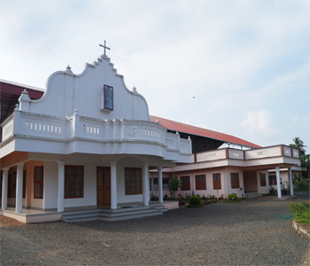

St. Joseph's Convent
†
It was on 14th May 1927 that the foundation stone of St. Joseph's Convent, Manjapra was laid. After the completion of construction, the convent was blessed by Bishop Mar Augustine Kandathil on 7th October 1928. Mother Mariam Magdalene was the first Superior along with other first members: Sr. Jelthrud, Sr. Marianjala, and Sr. Elanna.
❖